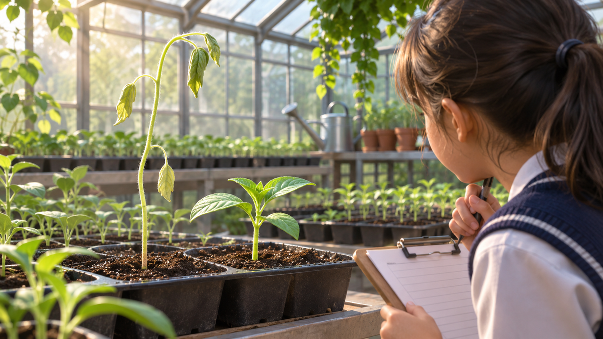

النباتات والزراعة
الدفيئة
الشتلة العالية تبدو ضعيفة. كيف يكون ذلك؟

جولة صباحيّة في الدفيئة
«هي بالتأكيد أنجح شتلة!» صاحت ميخال البالغة عشر سنوات بجانب الصفّ الأوّل في الدفيئة. كانت إحدى الشتلات أطول من الباقي. لكن حين اقتربت لاحظت أنّ أوراقها متدليّة قليلًا، بينما شتلة قصيرة بجانبها تبدو نضرة. هل الطول الأكبر يعني صحّة أكبر؟
تتابع ميخال وثلاثة أصدقاء شتلات متشابهة زُرعت في الأسبوع نفسه. طلبت المرشدة منهم توثيق التطوّر من دون تغيير ظروف النموّ بأنفسهم. وحتّى اليوم ظنّ الجميع أنّ «الدفيئة نفسها» تعني «الظروف نفسها».
يصبح الفرق واضحًا
حين تقيس ميخال ارتفاع الشتلات وفق التوجيهات تكتشف أنّ الفروق ليست عشوائيّة في نظرها. في جانب من الصفّ تبدو الأوراق نضرة، وفي الجانب الآخر تكون أكثر تدلّيًا في ساعات الظهيرة.
يقترح الأصدقاء تفسيرات مختلفة. من يظنّ أنّ الأمر يتعلّق بكمّيّة الماء، ومن يذكر الضوء الداخل من النوافذ. تقرّر ميخال ألّا تختار فورًا التفسير الذي يبدو لها الأكثر منطقيّة.
أشارت ميخال إلى شتلتين قريبتين: الأطول منهما تبدو أقلّ نضارة. كادت تكتب «الأطول = الأصحّ»، ثم محَت علامة المساواة. النموّ لا يُقاس بارتفاع لحظة واحدة فقط.
سألت المرشدة: «هل تعرفون كيف بدا كلّ واحد أمس؟ وما كانت ظروفه حين لم تكونوا هنا؟» اكتشف الأطفال أنّ معدّل التغيّر ومظهر الأوراق وظروف البيئة تروي أشياء مختلفة.
الدفيئة ليست موحّدة
وقفت ميخال عند الباب وأحسّت بنسمة هواء. قرب الجدار الشفّاف كانت شمس قويّة، وفي الظهيرة تكوّنت زوايا أدفأ. كان الجميع يسمّون المكان «الدفيئة» كأنّ فيها ظروفًا موحّدة — لكن النباتات وقفت في نقاط مختلفة.
حين يسمعون «درجة حرارة الدفيئة» يميل التلاميذ إلى التفكير برقم واحد. لكن ميخال تفهم أنّ قياسًا في نقطة واحدة لا يصف بالضرورة كلّ النباتات.
ماذا تحتاج النباتات
تشرح المرشدة أنّ النباتات تحتاج ظروفًا مناسبة، لكن الاحتياجات قد تتغيّر حسب نوع النبات ومرحلة النموّ. لا يمكن معرفة ما ينقص من مظهر ورقة واحدة فقط.
تريد ميخال مساعدة المرشدة على فهم أين تتغيّر الظروف. والهدف ليس ابتكار حلّ للدفيئة قبل وجود صورة واضحة للسؤال.
تتغيّر المراقبة في ساعات مختلفة
في يوم تزور ميخال صباحًا، وفي يوم آخر ظهرًا. شتلة بدت متدلّية في ساعة حارّة تبدو مختلفة حين تعود في اليوم التالي. تتعلّم أنّ صورة أو قياسًا منفردًا لا يصفان دائمًا حالة النبات على امتداد اليوم.
تقترح تحديد طريقة مقارنة تسمح بالتمييز بين تغيّر مؤقّت ونمط يتكرّر عدّة أيّام متتالية.
حين حدّدت ميخال مقياس الحرارة الوحيد على خريطة الدفيئة تفاجأت: كان معلّقًا قرب الباب تحديدًا، في الزاوية التي يتحرّك فيها الهواء. «إن كان هذا الرقم دقيقًا»، سألت، «فهل يمثّل حقًّا الصفّ البعيد أيضًا؟»
لم تتحرّك أيّ من الأحواض، لكن درجة الحرارة والضوء قد يتغيّران في ساعات مختلفة وأماكن مختلفة. وحتّى نتيجة رقميّة دقيقة قد تكون غير ممثّلة إن قيس في المكان الخطأ. الآن يريد التلاميذ فهم الدفيئة كلّها، لا قراءة رقم فقط.
المعروف والناقص
من المعروف أين زُرع كلّ نبات، وكم نما، وما رُصد في بعض زيارات الصفّ. وغير معروف إن حصلت كلّ النباتات على الكمّيّة نفسها من الماء، وما كانت شدّة الضوء في كلّ نقطة، وما كانت الرطوبة ودرجة الحرارة على امتداد اليوم.
تسأل ميخال ماذا ينبغي القياس ومتى وكيف نقارن من دون إزعاج النباتات أو تغيير الظروف أثناء الفحص.
قبل أن نبتكر
تقسّم ميخال والأصدقاء المعلومات إلى مجموعتين: أشياء رأوها وأشياء يخمنونها فقط. والآن يمكنهم تعريف حاجة واضحة: فهم ظروف النموّ في أماكن مختلفة وأوقات مختلفة.
أيّ مقارنة ستكون عادلة؟ وهل الأفضل مراقبة نبات واحد على امتداد الزمن أم عدّة نباتات في اللحظة نفسها؟ وما الذي يساعد المرشدة على تقرير أين يلزم فحص إضافيّ؟
تلميح من عالم الفضاء
في محطّة الفضاء تُستخدم منشآت لزراعة النباتات تُراقب فيها ظروف مثل الضوء ودرجة الحرارة والرطوبة والماء. الفكرة ليست نسخ منشأة فضائيّة، بل فهم لماذا يهمّ معرفة عدّة ظروف لا ظرف واحد فقط.
بعد القراءة — في ورقة الفريق
تحدّثوا في الفريق وأجيبوا استنادًا إلى معلومات القصّة. إذا نقصت معلومة، اكتبوا سؤالًا للمتابعة.
- من تريدون مساعدته في القصّة؟
- ماذا يحاول أن يفعل وما الذي يصعّب عليه ذلك؟
- ما الذي يحتاج إلى أن يكون قادرًا على فعله؟
- ما الذي تريدون معرفته أيضًا قبل تطوير الأفكار؟